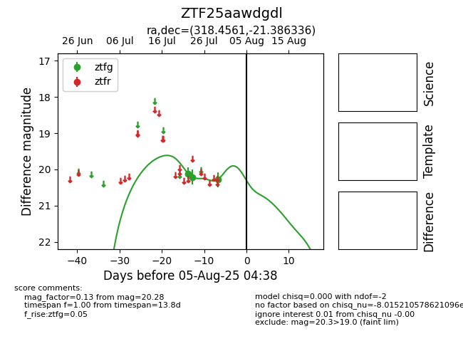

Target ZTF25aawdgdl at 2025-08-05 04:38, see:
FINK: fink-portal.org/ZTF25aawdgdl
Lasair: lasair-ztf.lsst.ac.uk/objects/ZTF25aawdgdl
ALeRCE: alerce.online/object/ZTF25aawdgdl
alt names
ZTF25aawdgdl (ztf,fink)
coordinates:
equatorial (ra, dec) = (318.4561,-21.38634)
galactic (l, b) = (27.0953,-40.43960)
photometry
last ztfg=20.28
3 ztfg detections
